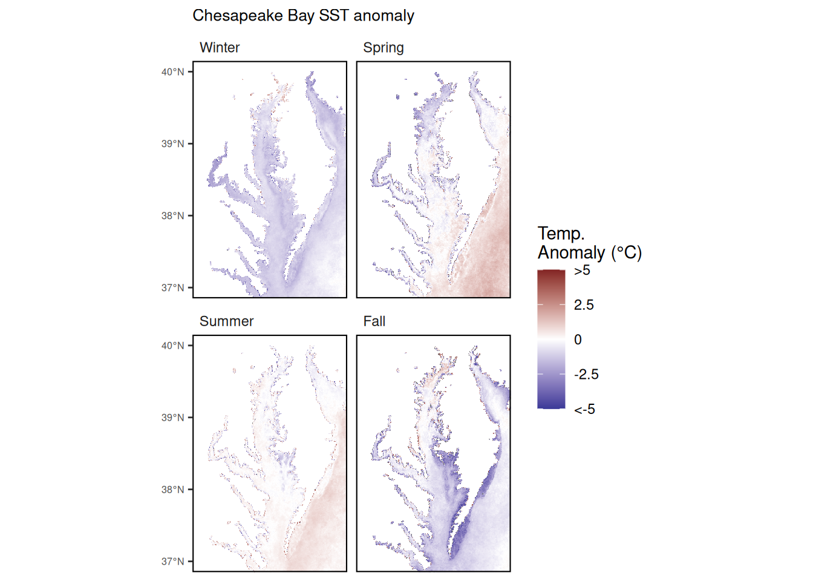

59 Chesapeake Bay Seasonal Sea Surface Temperature Anomaly
Last updated February 12, 2026
Description: Chesapeake Bay Seasonal Sea Surface Temperature Anomaly
Contributor(s): Ron Vogel, Bruce Vogt, Julie Reichert-Nguyen
Affiliations: University of Maryland, Cooperative Institute for Satellite Earth System Studies, NOAA Chesapeake Bay Office
Indicator Family:
Indicator Category:
Synthesis Theme:
59.1 Introduction to Indicator
Seasonal spatial anomaly maps represent the difference between a seasonal average sea surface temperature (SST) and a long-term average SST for that season. For the Chesapeake Bay, the long-term average is derived from the SST time series from 2007 to the year immediately prior to the current year (max(Year) - 1). This reference period serves as a benchmark for comparing current observations. Hence, the anomaly represents the degree to which the current seasonal average departs from historical average, either colder or warmer, indicating whether the current temperature conditions may be favorable or unfavorable for marine species.
59.2 Key Results and Visualizations
For 2025, winter sea surface temperatures showed conditions to be generally cooler (~0.5-1.5 degrees Celsius) throughout the Chesapeake Bay when compared to the 2007-2024 long-term average. The exception was the northern part of the bay around Susquehanna Flats where normal to slightly higher-than-average water temperatures (~0.5-1.0 degrees Celsius) were observed. Spring conditions exhibited average sea surface temperatures that deviated both above and below the 2007-2024 long-term average. These anomalies were greatest in the southern and southeastern regions (where water temperatures were slightly warmer with most areas not having more than a 0.5 degrees Celsius change) and in the northern Bay (where temperatures were slightly cooler with a change around 1.0-1.5 degrees Celsius). In the summer, anomalies were slightly warmer than average in southern parts of the bay (less than 0.5 degrees Celsius change). Conversely, in the fall, the lower bay exhibited cooler conditions than the 2007-2024 long-term average (~1.0-1.5 degrees Celsius). The northern part of the bay showed slightly warmer temperature anomalies (~0.5-1.0 degrees Celsius).
Mid-Atlantic

New England
#> [1] "Not part of New England report"59.3 Implications
Although winter 2025 experienced colder-than-average sea surface temperatures (which would benefit striped bass recruitment), the sporadic and lower flow observed in winter 2025 and at the beginning of spring 2025 may diminish striped bass spawning and recruitment success by altering the spatial coincidence of striped bass larvae and their preferred zooplankton prey. It is possible that the lower-than-average sea water temperatures in the winter (which dipped below the 38.12°F threshold) increased the overwintering mortality rate for blue crabs across the Chesapeake Bay.
Surface water temperatures exceeded suitable temperatures for juvenile summer flounder for most of the summer. Suitable thermal habitat for juvenile summer flounder is defined as waters with temperatures less than 25.9°C (78.6°F). Temperatures exceeding this threshold negatively affect growth of juvenile fish. Additionally information on the implications can be found in the seasonal summaries webpage of the Chesapeake Bay Interpretive Buoy System’s website.
59.4 Indicator statistics
Spatial scale: Data from two satellite instruments, AVHRR at 1 km spatial resolution and VIIRS at 750 m spatial resolution, are co-gridded to an 830 m spatial grid. Overpasses from the two instruments on all current operational satellites are composited into a daily scene in order to maximize geographic coverage on a per-day basis, i.e. minimize data gaps from clouds. Seasonal averaging further increases geographic coverage.
Temporal scale: Only nighttime satellite overpasses are used in the seasonal averages, i.e. the data do not represent daytime solar heating of the water surface. Seasons for Chesapeake Bay are Dec-Feb (winter), Mar-May (spring), Jun-Aug (summer), and Sep-Nov (fall).
Variable definitions
59.5 Get the data
Point of contact: Julie Reichert-Nguyen (julie.reichert-nguyen@noaa.gov)
ecodata dataset: ecodata::ches_bay_sst
Tech Doc link: https://noaa-edab.github.io/tech-doc/ches_bay_sst.html
59.5.1 Public Availability
Source data are NOT publicly available.
59.5.2 Accessibility Constraints
The seasonal SST anomaly data files (including the SST long-term climatology) are available from Julie Reichert-Nguyen at julie.reichert-nguyen@noaa.gov. The time series of daily SST, seasonal average SST, and other time intervals for 2007 – present, are available to the public at: https://www.star.nesdis.noaa.gov/pub/socd1/ecn/data/avhrr-viirs/sst-ngt. For more information about this SST data set, see: https://eastcoast.coastwatch.noaa.gov/cw_avhrr-viirs_sst.php. For other inquiries about this data set, contact Julie Reichert-Nguyen at julie.reichert-nguyen@noaa.gov.